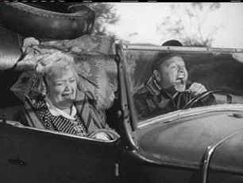

| Big Wheel/C+,B- |
| Image/1949/91/FS 1.33/BW |
The Big Wheel is no big deal. It's more an artifact of a bygone era, a formulaic "B" movie about race cars made to fill the second half of a double bill. Short on production values, The Big Wheel traces the zero to sixty rise of race car driver Billy Coy. You can bet there are plenty of turns around the track, but excitement is limited as Billy goes from mechanic to hot shot driver with checkered flags waving in every direction. Throw in some simpering romance left over from an Andy Hardy flick striving for charm and the shadow of a legendary racing Dad trying to flesh out the drama.
 |
|
Andy Hardy or Billy Coy? ©I mage |
Billy Coy, The Big Wheel of the title, is
all over the track, making hairpin character turns without the least concern for crashing the film.
Starting from friendly wide-eyed innocence then turning haughty within minutes, Coy is culled
together from too many clichés.
Mickey Rooney, approaching thirty, begins making the permanent leap to adult
roles with The Big Wheel. Rooney as Coy is a black and white actor, lacking any subtle tones
to create a nuanced character. A few years later in The Bridges at Toko-Ri , Rooney pulled
together his acting chops for a dramatic role. Mary Hatcher as love interest Louise Riley can
barely act. Veteran Thomas Mitchell does his best to add color to master mechanic Red Stanley
and Spring Byington is on hand as Momma Coy. And if only someone had taught Steve Brodie a
reasonable laugh as Happy Lee.
Much of this DVD looks excellent, but like track beat up toward the end of
a race, the original elements let the transfer down on the home stretch. Images are very sharp with
no noticeable edge enhancement. Contrast is comfortable and black and white tones creamy and
accurate. A few scenes are racked by MPEG artifacts in the background The mono sound is thin
and scratchy at times, but the dialogue is clean and motor roar is loud enough to drown out any
unwanted distortion.

The Feature Archive
has articles ranging from Akira
Kurosawa to Blonde Bimbos.
Movie Rage: Death in the Aisles
Everyone knows what it feels like to get angry at the movies these days. Here's a humorous
but not so delightful view of big screen misery.
 Brad Lang continues to add more interesting material to the extensive
collection at Classic
Movies. Everything from actors and actress to your favorite directors is
linked at the site.
Brad Lang continues to add more interesting material to the extensive
collection at Classic
Movies. Everything from actors and actress to your favorite directors is
linked at the site.

News, information, features about current films in theaters and in the pipeline. Easy to use
interface.


DVDPlanet is the DVD incarnation of legendary laser retailer Ken Crane's. Deep discounts
and serious service.
Brad Lang continues to add more interesting material to the extensive
collection at Classic
Movies. Everything from actors and actress to your favorite directors is
linked at the site.

The DVD Forum is an international association of hardware manufacturers, software firms and other
users of Digital Versatile Discs (the "DVD Format"), created for the purpose of
exchanging and disseminating ideas and information about the DVD Format and its technical
capabilities, improvements and innovations.

The Movie Poster Archive includes extensive poster images from the films of stars like Susan Hayward, Kirk Douglas, Katharine Hepburn and many more. Our featured star is Doris Day.